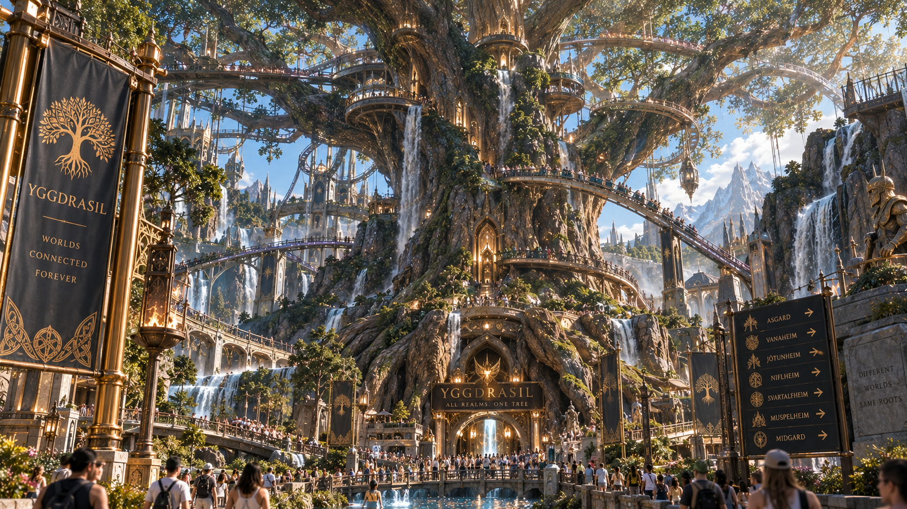
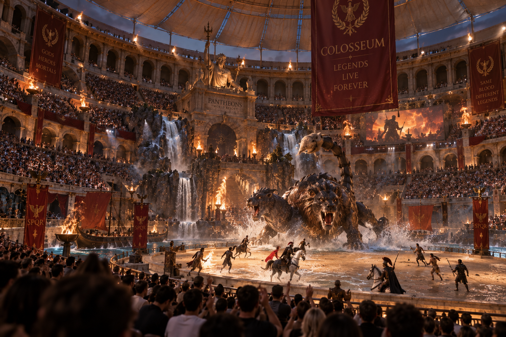
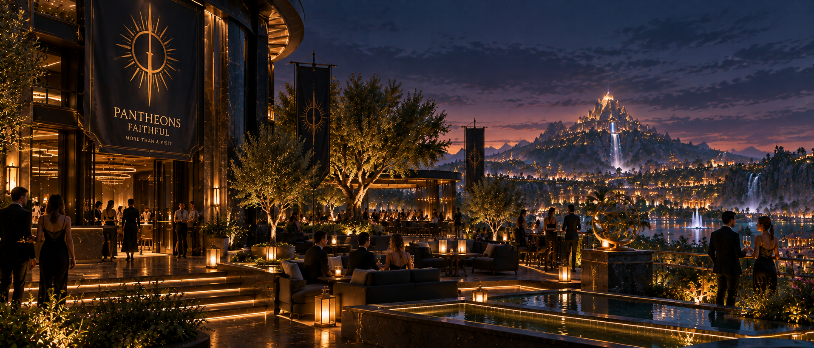

Attractions & expériences
Du carrousel de Gullinbursti aux grandes expériences signatures des royaumes.
ExplorerHuit héritages divins. Des centaines d'expériences. Un resort vivant où les anciennes légendes rencontrent les héros du présent, et où de nouveaux royaumes peuvent encore apparaître.
PANTHEONS ne se contente pas d’évoquer les légendes : chaque royaume est conçu comme une destination à part entière, avec son architecture, ses paysages, ses attractions et son atmosphère.
Visible depuis chaque royaume sans appartenir à aucun, Pantheons Mountain est le grand repère du resort : spectacles, liaisons panoramiques, espaces communs et lieux emblématiques s’y rencontrent.
Des campagnes iconiques accompagnent les expériences phares de PANTHEONS, des premières annonces aux grands classiques devenus indissociables de chaque royaume.
Spectacles, lumière, gastronomie et nuits prolongées font de PANTHEONS une destination qui ne s'arrête pas aux attractions.
“You don't have to believe in gods to walk among them.”
PANTHEONS · The Realms Are Open
Trains panoramiques, festivals, hôtels, banquets, expériences nocturnes, exploration, spectacles et lieux de vie font de PANTHEONS une destination de plusieurs jours.

Du carrousel de Gullinbursti aux grandes expériences signatures des royaumes.
Explorer
Festivals, lumière, gastronomie et Gods Among Us transforment le resort après le coucher du soleil.
Voir la galerie
Hôtels, accès inter-royaumes et séjours pensés pour explorer le parc sur plusieurs jours.
Préparer la visiteGrandes avenues, terrasses animées, spectacles de rue, jardins et promenades donnent à PANTHEONS une vie qui dépasse largement ses attractions.